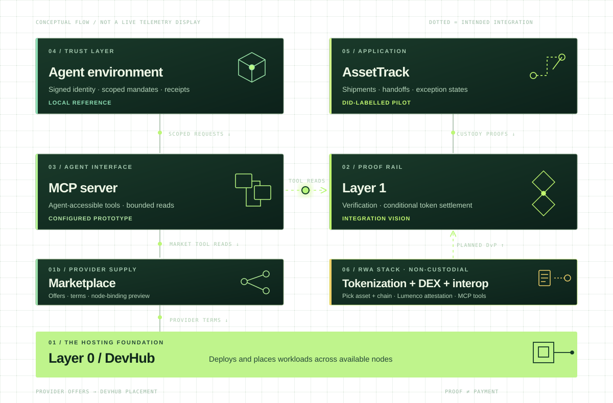

01 / FOUNDATIONPLATFORM
Layer 0 Compute fabric
DevHub brings projects, deployments and services onto a distributed, local-first hosting fabric. It is where the applications and tooling can run—not the ledger where custody is decided.
Explore Layer 0The hard problem: nobody trusts an order or an asset they did not watch being made. Autheo's bet: real-world assets and AI agents can share one market if every action carries provable authority. Agents propose, humans sign, receipts prove. Today this is architecture, reference prototypes and a walking skeleton—nothing on this page is live.
Marketplace coordinates provider offers and terms for Layer 0; DevHub deploys and places workloads. MCP exposes tools; agents and assets supply context. Layer 1 is a separate proof rail—not every event is a payment.

Reading order: Marketplace coordinates provider offers and terms; L0 / DevHub deploys and places workloads; MCP offers agent-facing tools; agent trust describes scoped identity; AssetTrack records custody; the RWA stack is planned to tokenize assets and trade them non-custodially across chains; L1 is a distinct intended verification and settlement rail. These components are not asserted to be automatically connected.
Each layer has its own job. Follow the references to inspect its current implementation and limitations.
DevHub brings projects, deployments and services onto a distributed, local-first hosting fabric. It is where the applications and tooling can run—not the ledger where custody is decided.
Explore Layer 0Coordinates provider profiles, compute offers, THEO terms and provider-side reporting for independently verified L0 nodes. DevHub still deploys and places workloads; preview listings and node bindings are not live capacity guarantees.
Private repository · see boundariesPlanned: pick an asset and a destination chain; Autheo's software applies the asset's issuance rules and compliance checks, settles delivery-versus-payment on Layer 1 and plans the cross-chain route. Users sign with their own keys; Autheo services are designed never to hold them. Lumenco optical features will be scanned and attested against the token's serial. Agents get read-only tools that return unsigned orders. Today: a walking skeleton on a local chain; no assets issued.
Read the planAn intended blockchain rail for verification and token settlement. Keep documents and telemetry off-chain; anchor selected digests and signer references only after validation. A receipt is not itself a release of funds.
Inspect chain read toolingA Model Context Protocol surface for querying DevHub, Marketplace, chain data and trust summaries. Tool access does not automatically grant custody authority or enable a purchase.
Explore MCP toolsA reference trust layer explores signed agent passports, mandates, policy checks and receipts. Its identities are prototype credentials, not a production DID registry or live wallet.
Explore agent trustFollow shipment handoffs, documents, seal and exception states. The reefer pilot's did: identifiers are illustrative labels—not registered DIDs or sensor-attested readings.
Marketplace brings provider supply and terms; DevHub places workloads. Tools expose the work. Identity defines who may act. Custody events record what changed. Verification and settlement follow valid proofs, never a nice-looking status badge.
Read the trust boundariesA brokered reefer load makes the architecture concrete without pretending a demo generated real-world proof.
Marketplace exposes provider offers and terms. DevHub retains deployment and placement authority on Layer 0.
An agent queries MCP tools; a scoped mandate governs what that agent may request in the trust prototype.
AssetTrack models tender → pickup BOL and seal → transit → receiver-signed POD. Exceptions pause the clean path.
Future integrations can anchor validated proof and release payment only when authorized conditions hold. The current pilot does neither.
The hard problem is trust in an order nobody watched being made. The rule that answers it: an agent may quote and build an order inside a signed mandate; only a person's own wallet signs; a receipt ties the two into the audit trail. It rules out agents holding keys, agents approving their own escalations, and any order without a mandate.
A person's DID signs a mandate for their agent: what it may do (for example quote, build an order), on which assets, per-action and total limits, and an expiry. Delegation can only narrow; the person can revoke it with a signed record.
The agent calls the RWA stack's read-only MCP tools. They verify the mandate chain offline and return an explained quote and an unsigned order. No mandate, or one that is expired, over its limit, revoked or of unknown status: refused, with the reason.
The person's own wallet (later, a hardware wallet) shows the decoded order (asset, amount, price, chain) and signs it. The agent never signs. An escalation needs a human signature bound to that one request.
Settlement is delivery-versus-payment under the asset's rules. A signed receipt links mandate, request and order hash, and its hash goes into the audit chain, so an auditor can trace who authorised what.
| Threat | Example | Planned guard |
|---|---|---|
| Spoofing | A forged mandate or agent key | Every mandate chain is verified offline back to the person's pinned root DID |
| Tampering | A prompt-injected quote altered before signing | Orders bind the EIP-712 domain (chain id, contract) and the wallet shows the decoded order; the signed order hash is in the receipt |
| Repudiation | “My agent did it, not me” | Signed receipt links mandate, request digest and the human-signed order hash |
| Information disclosure | Identity data leaking on-chain | Credentials travel as references with expiry; no personal data on-chain |
| Elevation / replay | A mandate reused, widened or used after revocation | Short expiry, per-action and total limits, narrowing-only delegation; the latest signed revocations are checked before an order is built, and unknown status means refuse |
| Denial of service | Policy service down or flooded | Fails closed: no explanation, no order |
People this protects, and who answers to them: under the TaaS plan's proposed decision D-11, only the issuer / transfer agent or the licensed venue may freeze or lift a freeze, by a signed and logged action, never Autheo; holders get a reason and ticket id within 1 business day and a decision within 10 (proposed; counsel to confirm). Still open, owned by counsel and decided before Stage 4: who may claw back a token, who bears the loss from a wrong attestation or a harmful order an agent built inside its mandate, the independent appeal route beyond D-11, and which jurisdictions the first pilot covers. Status: designed, and being built now against a local chain only. No agent can place a live order.
One table for where each piece is today and the test that moves it forward. Critical path: TaaS plan → RWA build walking skeleton → policy service → Layer 1 testnet → pilot issuance → institutional venue. Layer 1 testnet is the largest schedule risk, so Stage 2 below needs no testnet.
| Piece | Status today | Waits on | Next exit test |
|---|---|---|---|
| TaaS plan | Plan of record; build milestones M0–M6, each with exit tests | Partners (licences, cash leg) | Letters of intent from a cash-leg bank, an issuer and a market maker |
| RWA stack build | Private development repo; walking skeleton on a local chain | TaaS plan, DEX plan | Scripted onboard → mint → DvP → audit-verify passes in CI on every push |
| Autheo DEX | Phase 0, design; one venue among external DEXs and aggregators | TaaS policy engine, Layer 1 testnet | Market-structure spec reviewed with counsel and a venue partner |
| Agent environment | v0.5 local reference: DIDs, mandates, receipts | Autheo identity contracts (its Phase A) | Stage 2 below; platform owners approve versioned contracts |
| MCP server | Read-only prototype (configured, not connected to a live service) | DevHub, Layer 1 reads | Order tools return unsigned orders only |
| Layer 1 | Integration vision; not yet targeted by the build | Autheo L1 testnet access | Contracts pass supply and DvP invariants on testnet (TaaS M2) |
| L0 Mesh | Planned (cross-chain) | Layer 1 | Rules intact after 1,000 round trips (TaaS M6) |
| AssetTrack | Pilot workflow concept; tracking-node concept CAD | Agent environment receipts (later) | Custody events use the same receipt format |
| Lumenco attestation | Designed; no scanner integration yet | Agreement with Lumenco on the scan format and attesters | A real scanner's signed attestation is accepted against a token serial |
| Hardware wallet | Hardware concept | Order format of the RWA stack | Shows the decoded order on the device before it signs |
Projects with a new chain, cross-chain routes and regulated assets usually overrun, so each stage is gated by a test anyone can rerun, not by a calendar. Outside view from the TaaS build plan (a cost-overrun class, Flyvbjerg and Budzier's 1,471 IT projects, applied to schedule): M0–M6 is 76 weeks inside view, 101 at P50 (×1.3) and 133 at P80 (×1.7), each milestone rounded up before summing; the tail can be fatter. A tokenization-specific reference class is not yet assembled.
Exit test One scripted run (onboard → mint → DvP → audit-verify) passes in CI on every push; the policy engine explains 100% of its test vectors.
TaaS M0 · Stop if CI goes red: fix it before new scope.Exit test On a local chain, an agent with a mandate gets an explained, unsigned order; without one, past expiry, over its limit, revoked or of unknown revocation status it is refused with a reason; a human signature settles it; the receipt verifies offline and its hash is in the audit chain.
Stop if any path lets an agent's key move value.Exit test ≥ 200 policy vectors; p95 under 50 ms at 200 requests/s; supply and DvP invariants hold on Autheo L1 testnet; threat tests pass.
TaaS M1–M2 · Stop if there is no testnet access when M1 exits or passes its P80 (14 weeks): stay local, re-plan M2.Exit test A design partner issues and pays a coupon on testnet; the first secondary trade settles DvP against tokenized deposits.
TaaS M3–M4 · DEX phase 2 · Stop if no licensed partner holds custody, venue and transfer-agent roles, or any open counsel item above is undecided.Exit test Adversarial tests find no bypass, self-approval, widened mandate, overspend, replayed approval or use after revocation; a third party audits the mandates.
DEX phase 3 · agent environment phases B–D · Stop if any bypass passes: agents stay quote-only.Exit test Rules intact and supply of record unchanged after 1,000 round trips; a holder on another chain checks units against Layer 1 using public endpoints.
TaaS M6 · DEX phase 4 · Stop if supply of record drifts once: routes stay closed.Where partners come in: Stage 3 needs Autheo L1 testnet access; Stage 4 needs a licensed custodian, venue operator, transfer agent and a cash-leg bank. Start with the TaaS plan and the DEX plan.
This site illustrates how independently developed Autheo projects can fit together. Marketplace's provider workspace does not yet establish verified node bindings or live capacity; DevHub remains the scheduler. The agent environment is a local reference simulation, MCP a configured prototype, and AssetTrack's sample DIDs and reefer handoffs are illustrative. The RWA stack is a private walking skeleton on a local chain, and the agent–DEX integration is being built against a local chain: no agent can place a live order. Production DID registration, cross-product integration and automatic on-chain settlement require additional work and verification. Nothing here is an offer of securities; regulated roles stay with licensed partners.